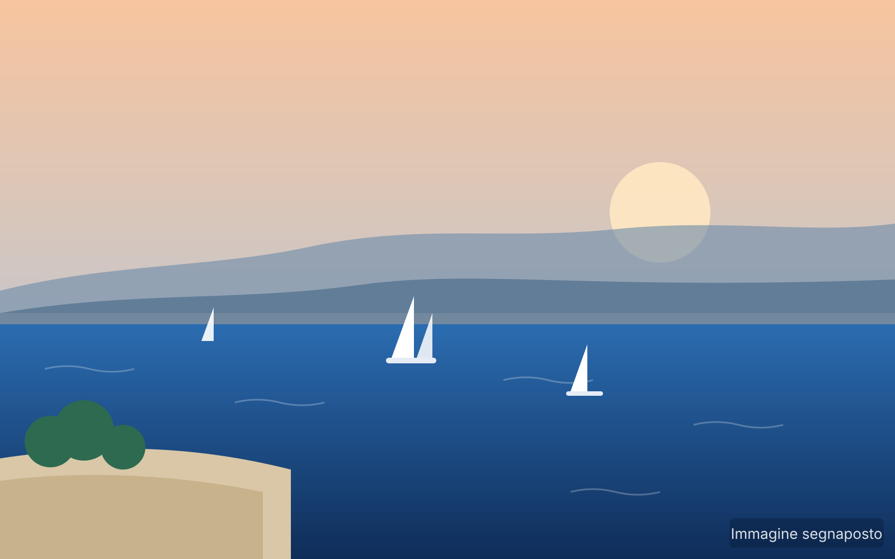

Riqualificazione della costa di Barcola
Il lungomare di Barcola è il luogo del cuore dei triestini. Il progetto “La nuova costa di Barcola”, presentato dalla Regione nel novembre 2023, ne disegna il futuro in modo organico: un piano unico per la sicurezza della costa, la balneazione, la viabilità e i servizi.
- Due parti integrate: lato mare (sicurezza, balneazione, strutture) e linea di costa (strade e parcheggi)
- Nuove baie, protezione della costa e spazi per gli sport acquatici
- Lavori per fasi, senza togliere la spiaggia ai cittadini durante l’estate
- Iter: variante al Piano regolatore comunale, progetti esecutivi, gare e realizzazione graduale
- Studio di fattibilità articolato in 14 lotti DA VERIFICARE
~20 anniorizzonte complessivo dell’intervento
2macroambiti progettuali
14 DA VERIFICARElotti di riqualificazione